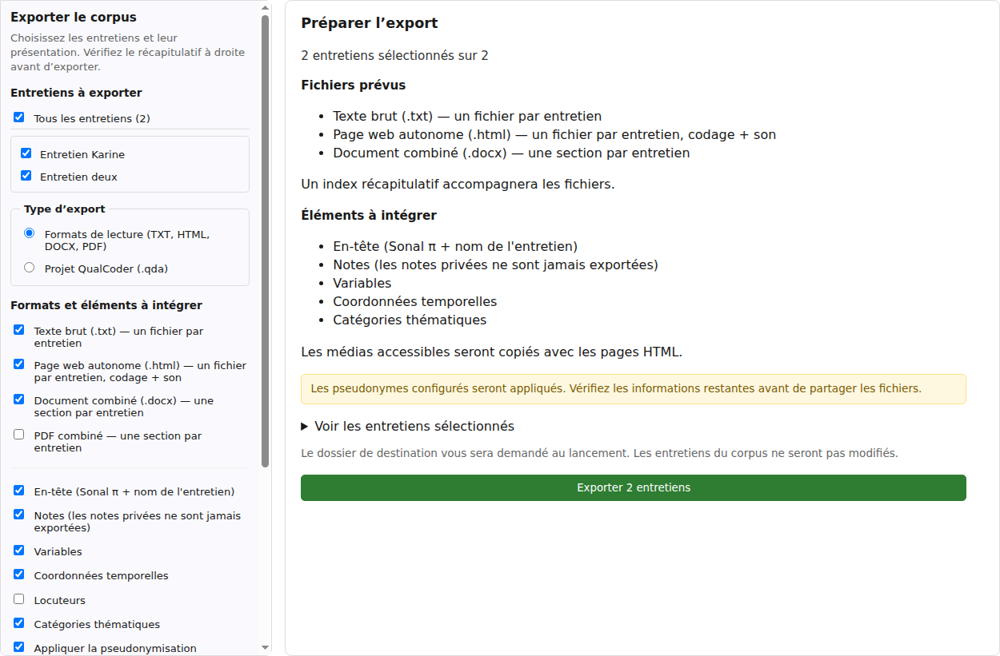
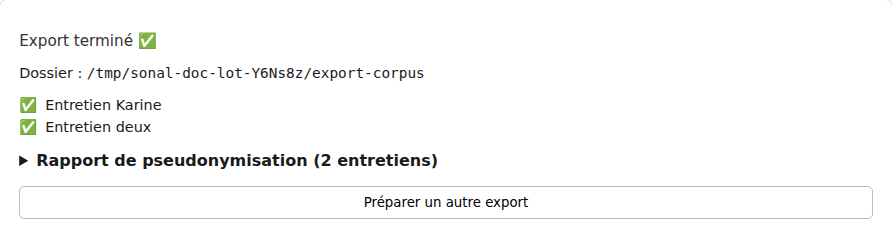

Organiser et exporter
Exporter un lot d’entretiens
Pour relire ou transmettre plusieurs transcriptions, préparez un seul export depuis le corpus. Vous pouvez obtenir un fichier par entretien, un document combiné ou plusieurs formats à la fois.
Exporter n’est pas sauvegarder. Les fichiers produits sont des copies de lecture. Ils ne remplacent pas le corpus de travail et ne conservent pas tous ses objets. Pour restaurer un corpus local, utilisez une copie de sauvegarde ZIP.
Choisir les entretiens
- Ouvrez votre corpus, puis l’espace Organiser et exporter.
- Cliquez sur Exporter le corpus. Le menu Corpus → Exporter le corpus… ouvre le même outil.
- Dans la colonne de gauche, cochez les entretiens souhaités. Ils sont tous sélectionnés lors de la première ouverture de l’outil.
- Conservez le type Formats de lecture (TXT, HTML, DOCX, PDF).
- Vérifiez à droite le nombre d’entretiens et, si nécessaire, ouvrez Voir les entretiens sélectionnés.
Pour ne retenir que quelques entretiens, décochez Tous les entretiens, puis cochez les titres voulus. Aucun export ne peut démarrer avec une sélection vide.
Le choix Projet QualCoder (.qda) correspond à un autre transfert. Il exporte actuellement le texte original sans pseudonymisation ; les réglages des formats de lecture ne le rendent pas anonyme.
Choisir les fichiers à produire
Vous pouvez cocher plusieurs formats. Les entretiens sont traités dans l’ordre de la liste.
| Format | Résultat |
|---|---|
| Texte brut (.txt) | Un fichier par entretien, pour reprendre facilement les mots transcrits. |
| Page web autonome (.html) | Une page par entretien, avec la présentation, les thèmes et les éléments choisis. |
| Document combiné (.docx) | Un document de traitement de texte contenant une section par entretien. |
| PDF combiné | Un document à lire ou imprimer, contenant une section par entretien. |
Un fichier _index.txt accompagne le lot. Il récapitule les titres, les dates lorsqu’elles sont renseignées et le nombre de mots des entretiens exportés.
Les formats SONAL, SRT et VTT ne sont pas proposés dans ce lot. Pour ces formats, utilisez Exporter cet entretien depuis l’entretien ouvert.

Régler le contenu et vérifier le rapport
Les cases reprennent celles de l’export individuel : en-tête, notes, variables, coordonnées temporelles, locuteurs, thèmes et pseudonymisation. Leurs effets dépendent du format.
- Les notes publiques peuvent être incluses ; les notes privées sont exclues de ces formats de lecture.
- Les variables privées sont exclues.
- Les commentaires de passage ne sont pas rendus dans TXT, DOCX ou PDF. Le HTML les conserve dans le fichier sans les afficher : leur texte et leur auteur doivent aussi être vérifiés.
- Les noms, titres, notes libres, libellés de thèmes et valeurs ne sont pas tous réécrits par la pseudonymisation.
La pseudonymisation est cochée par défaut dans cet outil. Pour contrôler les remplacements configurés, cochez Consulter le rapport de pseudonymisation avant l’export, puis cliquez sur Vérifier le rapport avant l’export.
Le rapport distingue, pour chaque entretien et chaque format, les remplacements appliqués, les éléments conservés et les vérifications manuelles. Vous pouvez l’enregistrer séparément avec Enregistrer le rapport, puis cliquer sur Lancer l’export.
Modifier les réglages ou quitter l’outil invalide cet aperçu : il faudra le préparer à nouveau. Un aperçu incomplet indique les entretiens qui n’ont pas pu être examinés.
Le rapport ne garantit pas l’anonymat du lot. Il ne détecte pas toutes les identités. Le fichier d’index, les noms de fichiers et les titres des documents combinés peuvent eux aussi contenir des noms réels.
Décider de copier les médias
Lorsque le format HTML est coché, l’option Copier les médias accessibles (dossier medias/) apparaît. Elle est cochée par défaut. Les enregistrements disponibles sur le poste peuvent être copiés dans le sous-dossier medias/.
La copie porte sur l’enregistrement original, sans modification de la voix ni du contenu, même si le texte est pseudonymisé. Décochez cette option si le lot ne doit pas contenir les enregistrements.
Avec la pseudonymisation activée, les pages HTML n’affichent pas de lecteur. Cela n’empêche pas la copie du média si vous l’avez demandée : l’absence de lecteur ne signifie donc pas que le dossier est sans audio ou vidéo.
Sans pseudonymisation, les pages HTML peuvent lire les copies disponibles dans medias/. Conservez les pages et ce sous-dossier ensemble, sans changer leur disposition. Si vous ne copiez pas le média, ou s’il est inaccessible, le lot HTML ne propose pas de lecteur pour cet entretien. Vérifiez séparément la présence de chaque enregistrement attendu.
Enregistrer le lot dans un dossier distinct
- Relisez le récapitulatif à droite.
- Cliquez sur Exporter… ou, après le rapport, sur Lancer l’export.
- Choisissez un nouveau dossier d’export, distinct du corpus natif. Un nom avec la date est proposé.
- Attendez le bilan avant de déplacer ou de partager ce dossier.
Utilisez un dossier vide pour chaque essai. Les fichiers TXT et HTML homonymes reçoivent un numéro, mais l’index et les documents combinés peuvent remplacer une version précédente si vous réutilisez le même dossier.
L’export ne modifie pas les entretiens et ne déclenche pas leur sauvegarde ni leur publication. L’entretien ouvert est repris dans son état courant ; les autres sont lus au fur et à mesure. Ce n’est pas une sauvegarde simultanée de tout le corpus.
Contrôler le bilan et les fichiers

Consultez chaque ligne : une erreur sur un entretien n’empêche pas le traitement des suivants. Un échec d’écriture du document combiné est signalé séparément. L’index liste les entretiens traités avec succès ; il ne remplace pas le contrôle de la présence des fichiers combinés.
- Ouvrez _index.txt et comparez sa liste à votre sélection.
- Ouvrez les fichiers TXT et HTML attendus, ainsi que les documents combinés demandés.
- Vérifiez les noms réels dans le texte, les titres, les notes, les variables et les noms de fichiers.
- Examinez le dossier medias/, s’il existe, avant de partager quoi que ce soit.
- Si un entretien ou un document a échoué, corrigez la cause puis relancez un export dans un nouveau dossier.
Arrêter ou reprendre un export
Pendant le traitement, Annuler après l’entretien courant laisse finir l’entretien en cours puis arrête les suivants. Les fichiers déjà créés ne sont pas supprimés. Les documents combinés peuvent alors ne contenir que la partie traitée.
Le bilan indique les entretiens exportés, ceux en échec et ceux non traités après l’arrêt. Pour reprendre, cliquez sur Préparer un autre export, vérifiez les cases conservées et lancez un nouveau lot dans un autre dossier.
Si vous annulez seulement le choix de destination, aucun fichier n’est créé pour ce lancement. Vous pouvez revenir aux réglages avec Préparer un autre export.